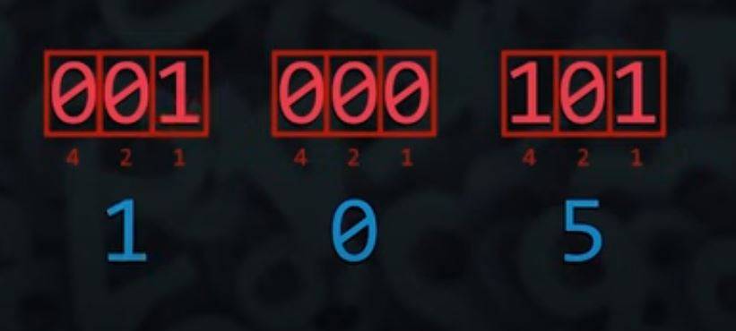
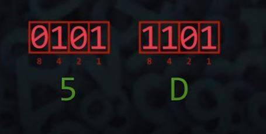

Sistema Binario
Um sistema de numeração posicional que utiliza apenas dois dígitos: 0 e 1. Em contraste com o sistema decimal, que é a base 10. No sistema binário, cada posição em um número representa uma potência de 2.
Características Principais:
No sistema decimal, a contagem começa em 0 e vai até 9. Ao atingir 9, completa-se a casa das unidades e inicia-se a casa das dezenas. Por exemplo:
Unidades (100) 0, 1, 2, 3, 4, 5, 6, 7, 8, 9
Dezenas (101) 10, 11, 12, 13, 14, 15, 16, 17, 18, 19
No sistema binario, a contagem começa em 0 e vai até 1. Ao atingir 1, completa-se a 1ª casa binaria e inicia-se a 2ª casa . Por exemplo:
1ª Casa (20) 0, 1
2ª Casa (21) 10, 11
3ª Casa (22) 100, 101, 110, 111
4ª Casa (23) 1000, 1001, 1010, 1011, 1100, 1101, 1111
Corversão
Pode ser convertido para o sistema decimal e vice-versa. Exemplo:
Vamos converter o número binário 1011 para decimal.
Decimal
0
1
2
3
4
5
6
7
8
9
10
11
Binário
0
1
10
11
100
101
110
111
1000
1001
1010
1011
Portanto, o número binário 1011 é igual a 11 em decimal.
Há uma forma mais simples de calcular a conversão, sem precisar iniciar a contagem a partir do zero.
Conversão de Binario para Decimal:
Escreva o número binário e suas potências de 2:
4ª casa = 1 x 23 = 8
3ª casa = 0 x 22 = 0
2ª casa = 1 x 21 = 2
1ª casa = 1 x 20 = 1
A soma total: 8 + 0 + 2 + 1 = 11
Conversão de Decimal para Binário:
Para converter um número decimal para binário, você pode dividir o número por 2 repetidamente e registrar os restos. Por exemplo, para o número decimal 11:
11 dividido por 2 é 5, resto 1
5 dividido por 2 é 2, resto 1
2 dividido por 2 é 1, resto 0
1 dividido por 2 é 0, resto 1
Como 1 é menor que 2, ele é representado diretamente como 1 na última posição do número binário. Portanto, a posição mais baixa (unidade) recebe o valor 1.
Converter Binario para Octal
Para converter um número binário para octal, você pode seguir uma abordagem direta utilizando a conversão intermediária para decimal, mas há uma maneira mais eficiente ao trabalhar diretamente com binário e octal. Aqui está como você pode fazer isso:
Agrupe os dígitos binários em blocos de 3 bits: Comece do final (direita) e agrupe os dígitos binários em blocos de 3. Se o número de dígitos não for múltiplo de 3, adicione zeros à esquerda.
Converta cada bloco para octal: Cada bloco de 3 bits representa um dígito octal.
Cada bloco de três bits representa um digito Octal. Os valores abaixo de cada digito (1,2,4) correspodem a base 2 multiplicada por sua potencia (20, 21, 22). Apenas as potencias em que o digito é 1 serão somadas.
Converter Binario para Hexadecimal
Agrupe os dígitos binários em blocos de 4 bits: Comece do final (direita) e agrupe os dígitos binários em blocos de 4. Se o número de dígitos não for múltiplo de 4, adicione zeros à esquerda.
Converta cada bloco para Hexadecimal: Cada bloco de 4 bits representa um dígito octal.
Cada bloco de quatro bits representa um dígito hexadecimal. Os valores associados a cada dígito (1, 2, 4, 8) correspondem às potências de 2 (20, 21, 22, 23). Somam-se apenas as potências onde o bit é 1. Por fim, substitua qualquer valor acima de 9 pelos caracteres correspondentes na base hexadecimal (A-F).